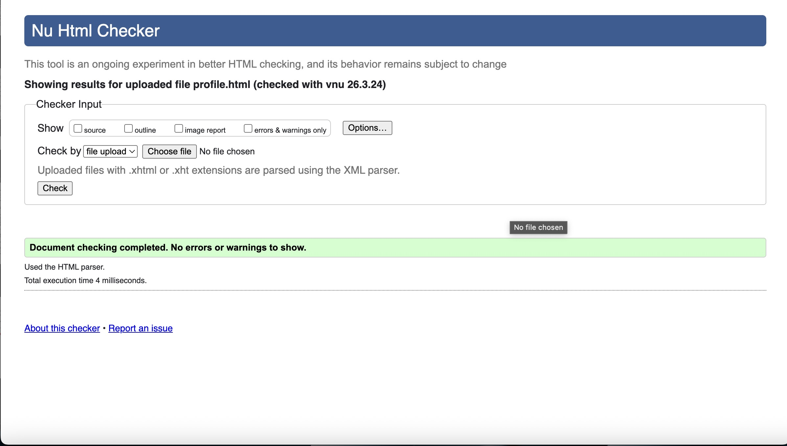
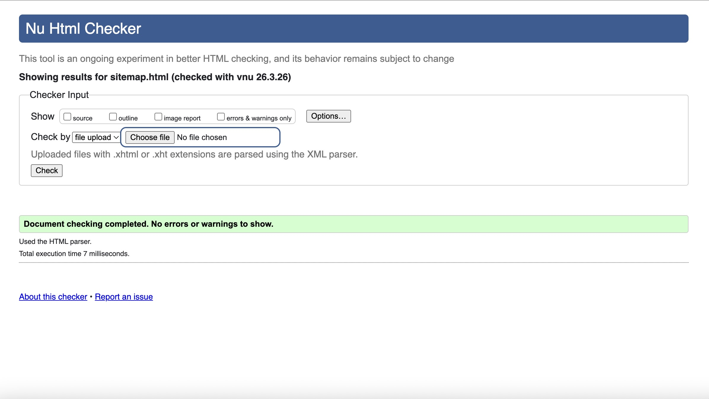
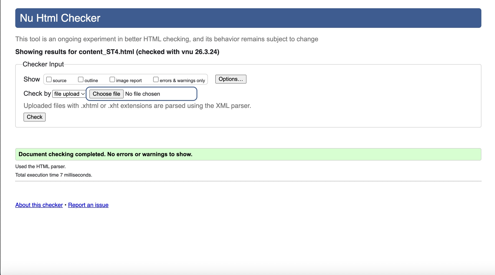

User Profile Page Validation
When I first ran the User Profile page through the W3C validator, I got a bunch of errors because I forgot to close a few div tags in the output area, and I accidentally used a duplicate ID for two different paragraphs. I also had an issue where my CSS wouldn't link properly because of a typo in the file path. The JavaScript console threw a 'TypeError' at first because I was trying to run the script before the page fully loaded, but I fixed that by moving my script to the bottom of the body tag.

Back to Page Editor page
Sitemap Page Validation
The Sitemap validation was a bit of a nightmare initially. The HTML validator yelled at me for trying to use block-level elements inside the inline SVG, so I had to research how to properly structure SVG text nodes instead. For the styling, the CSS validator caught a few parse errors because I missed a semicolon at the end of my hover transition effects.

Back to Page Editor page
Future Conservation Tech Validation
For the Content page, the HTML validator flagged me for not having alt text on two of my images, and I had accidentally nested a heading tag inside a paragraph tag, which completely broke the layout validation. Fixing those cleared the HTML errors. The CSS validator caught a warning about using an outdated prefix for CSS Grid that wasn't needed anymore, so I cleaned that up to make it standard-compliant.
